最大限のサポートで
世界に通用する
英語力
を私たちと,ともに。

Learning with us
「勉強しているのに、話せない」と感じていませんか？
「聞き取れるのに、話せない」
「正しい英語かどうかが不安で、口を開けない」
そんな悩みを抱えたまま、英語を使う場面を避けていませんか？

発音・リズムに自信がない
- カタカナ英語
- 音のつながりが分からない

語彙力不足
- 言いたいことはあるのに英語が出てこない。
- 知っている単語なのに会話では使えない
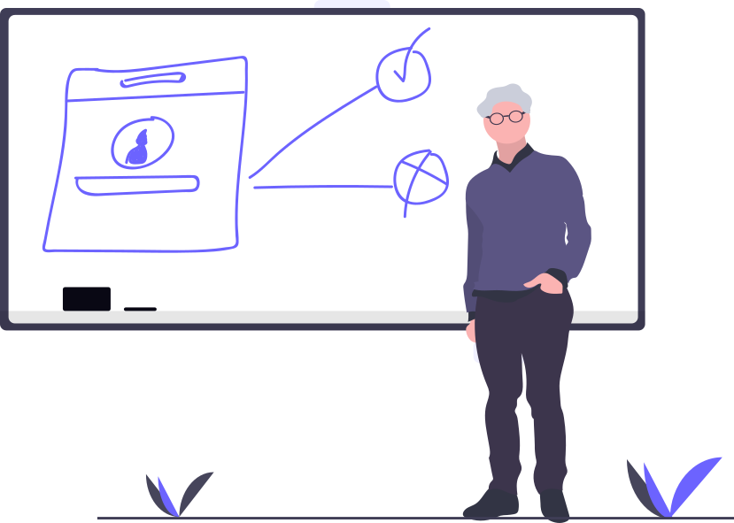
瞬発的な文法運用力
- 正しさを意識しすぎて、話す一歩が踏み出せない
- 文法を考えているうちに、会話が終わってしまう
なぜ、英会話は途中で止まってしまうのか
英語が出てこない本当の理由は、
発音・リズム・語彙・文法の不足ではありません。英語を「考えながら使おう」としていることです。
英会話に必要なのは知識ではなく、
それらを瞬時に組み合わせ、反射的に使える力。
私たちは、英語を
「自然に出てくるもの」へ変えることにフォーカスしています。
- 1. 即理解
- 聞いた英語を、そのまま意味で捉える力。
- 2. リズム感
- 英語特有のテンポで話し、聞く力。
- 3. 語彙瞬発
- 必要な単語が迷わず出てくる力。
- 4. 文法自動化
- 考えなくても正しい形で話せる力。
- 5. 反射的応答
- 日本語を介さず、すぐ返せる力。

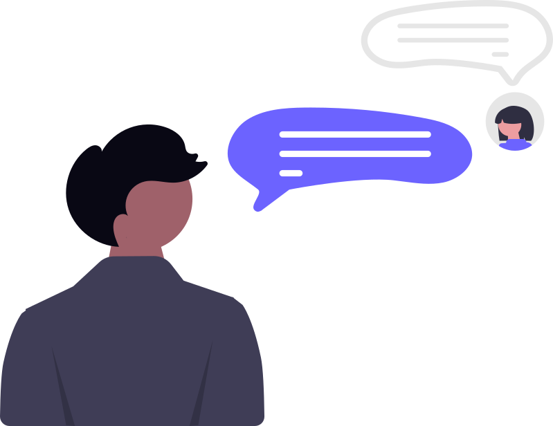
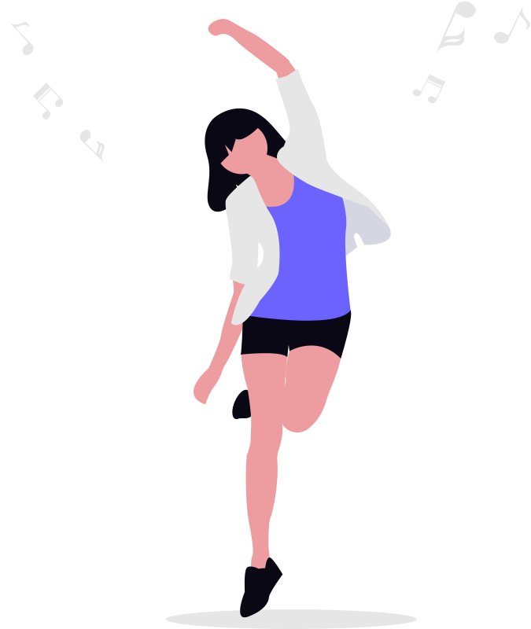

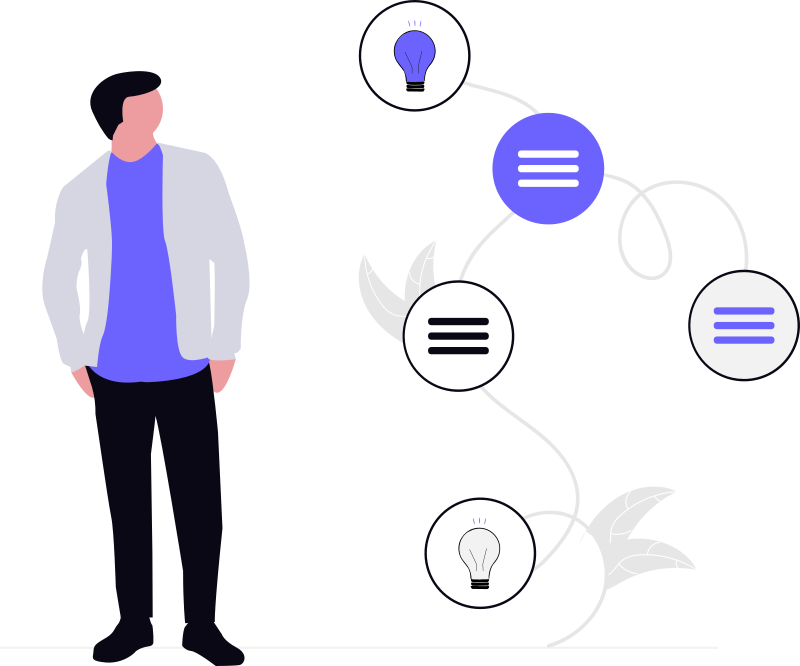
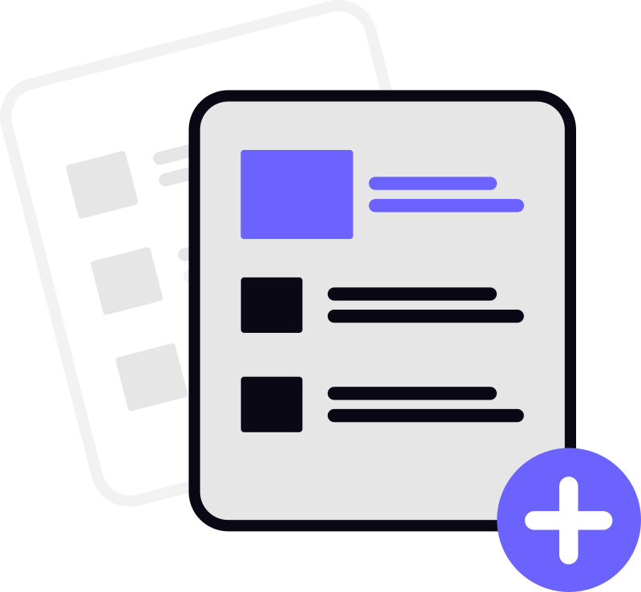
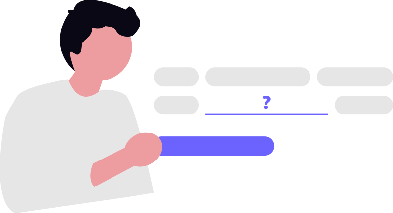
学ぶ英語から、使える英語へ。
私たちが大切にしているのは、 英語を「学ぶこと」ではなく、「使えるようになること」。
指導方法も教材も、学習の進め方も、 すべては、英語が自然に口から出てくる状態をつくるためにあります。
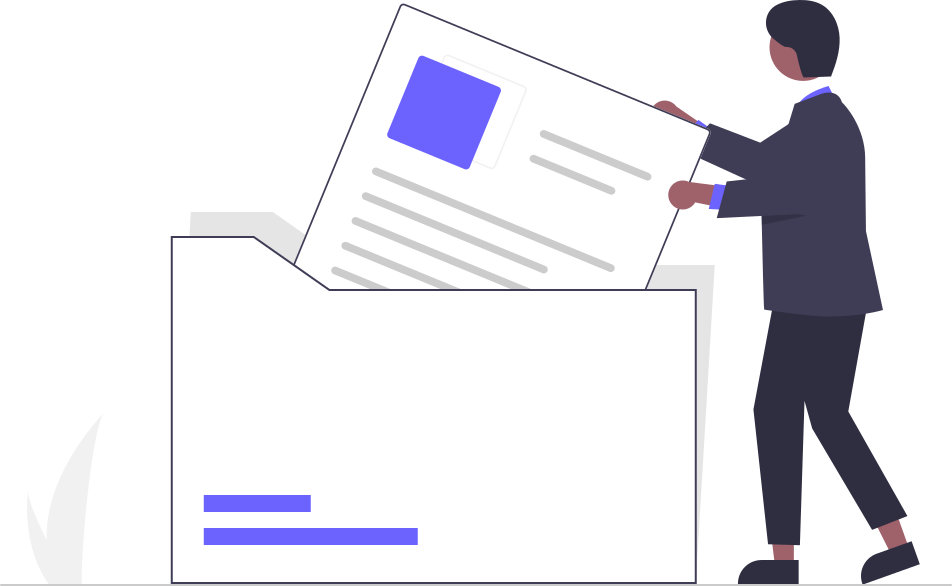
意味処理を止めないインプット設計単語や文法を考えさせず、「聞いた瞬間に意味が立ち上がる」トレーニングを重ねます。
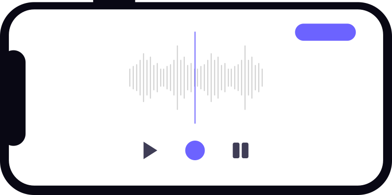
英語の音とテンポに体を慣らす反復練習シャドーイングや音読を通して、英語特有のリズムを感覚として身につけます。
暗記ではなく、 「この状況ならこの単語」が自然に出る状態をつくります。
ルールを理解するだけで終わらせず、口が先に動くレベルまで落とし込みます。
 日本語を介さないアウトプット環境
日本語を介さないアウトプット環境
即座に返すことを前提にしたやり取りで、英語を英語のまま使う回路を育てます。
忙しいビジネスパーソン
に嬉しい
使いやすさ!
-
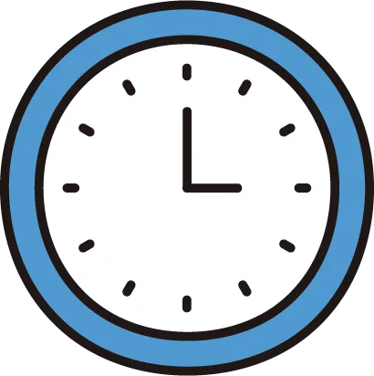
受講可能時間
5:00〜25:00 -
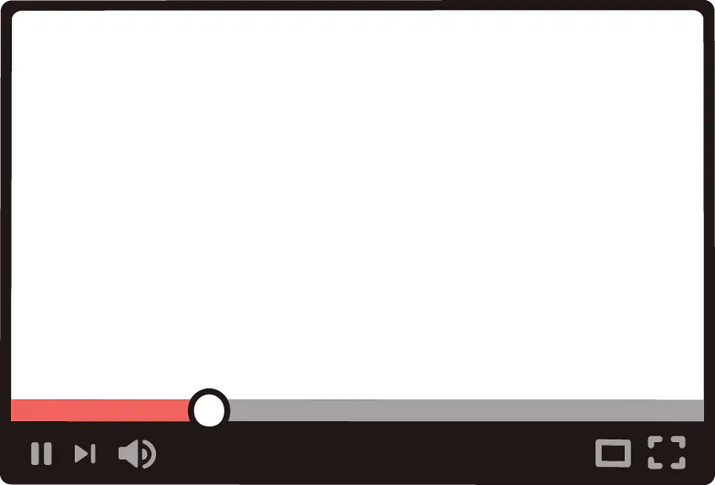
予習・復習の
オリジナル動画！ -
 レッスン
レッスン
録画機能！ -
 入会費・会員費
入会費・会員費
０円！ -
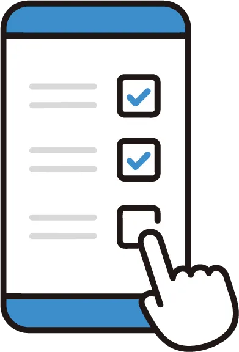
休止・再開自由！
レッスン後・即フィードバック
話した内容をもとに、
「直すべき1点」だけをその日のうちに可視化。
つまずき原因の言語化サポート
「聞き取れない」「話せない」を
発音・リズム・語彙・文法のどこで止まっているか明確に。
個別リカバリートレーニング
弱点に合わせて、
次回レッスンまでにやる内容をピンポイントで提示。
“考えない英語”定着チェック
理解しているかではなく、
反射的に使えているかを基準に成長を確認。
よくあるご質問
英語がほとんど話せなくても受講できますか？
はい、問題ありません。
話せない原因を整理し、発音・リズム・語彙・文法を「使える形」に組み直すところから進めます。
どれくらいで英語が出てくる感覚を実感できますか？
個人差はありますが、多くの方が数週間で「考える前に口が動く瞬間」を感じ始めています
仕事や学校で忙しくても続けられますか？
受講可能時間は5:00〜25:00。レッスン録画や予習・復習動画もあるため、スキマ時間でも学習できます。
文法や単語の勉強は必要ありませんか？
知識としての学習よりも、実際に使える形にするトレーニングを重視しています。必要な内容は
レッスン内で自然に身につきます。
他の英会話スクールとの違いは何ですか？
会話が止まる「本当の原因」にフォーカスし、反射的に英語を使える状態をつくる点が大きな違いです。
レッスンを休んだり、一時的に止めることはできますか？
はい、休止・再開は自由です。ライフスタイルの変化に合わせて、無理なく続けられます。
入会費や追加料金はかかりますか？
入会費・会員費はかかりません。必要な費用はレッスン料金のみで、追加請求はありません。

お問い合わせはこちら